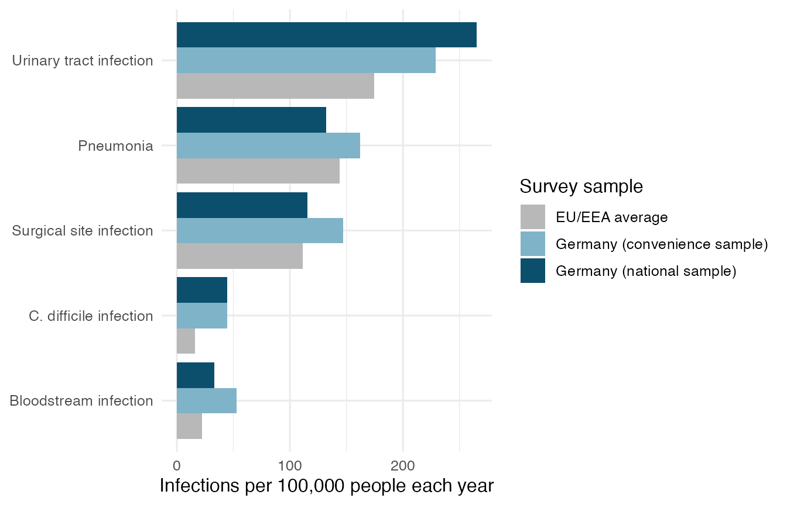
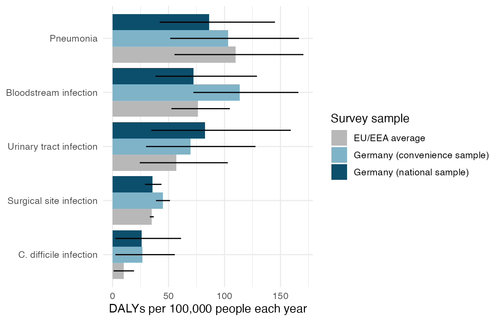

Exploring the burden of hospital infections
haiburden.RmdWho this package is for
This package is for hospital infection control managers. They decide which infections get prevention money first. The package helps them answer one question. Is the most common hospital infection also the infection that does the most harm?
Install the package
Install the package from GitHub with the remotes package. Then load it.
# install.packages("remotes")
remotes::install_github("ETC5523-2026/etc5523-assignment-4-cfan0055")
library(haiburden)The data
The package has one dataset called hai_burden. It holds
published estimates for five hospital infections. Each row is one
infection in one survey sample for one measure. All numbers are yearly
rates per 100,000 people.
head(hai_burden)
#> # A tibble: 6 × 6
#> survey infection measure estimate lower upper
#> <chr> <chr> <chr> <dbl> <dbl> <dbl>
#> 1 Germany (national sample) Pneumonia Infect… 132 104. 170.
#> 2 Germany (national sample) Urinary tract infec… Infect… 265. 217. 314.
#> 3 Germany (national sample) Bloodstream infecti… Infect… 33.4 20.5 52.3
#> 4 Germany (national sample) Surgical site infec… Infect… 115. 93.3 141.
#> 5 Germany (national sample) C. difficile infect… Infect… 44.6 31.1 61.8
#> 6 Germany (convenience sample) Pneumonia Infect… 162. 138. 191.The measure column has three values.
Infections counts new cases. Deaths counts
deaths caused by the infection. DALYs counts healthy years
lost. Type ?hai_burden to read the full description of
every column.
Launch and use the app
Run this code to open the app in your browser.
run_app()The app has three controls on the left.
- What do you want to count? Choose the number of infections, the number of deaths or the healthy years lost.
- Which survey samples? Tick one or more samples. The app shows a message if you untick all of them.
- Show 95% uncertainty intervals. Tick this box to add a black line to each bar.
Start with the number of infections. Then switch to healthy years lost. Watch how the order of the bars changes.
Read the outputs
The chart shows one bar for each infection. The longest bar is at the top. The sentence under the chart names the largest bar. The table shows the healthy years lost for every 100 infections.
The same chart can be made outside the app with
plot_burden(). First count the infections.
plot_burden(hai_burden, burden_measure = "Infections")
Urinary tract infection is the most common infection in Germany and in the EU/EEA. Bloodstream infection is one of the least common.
Now measure the harm and add the uncertainty intervals.
plot_burden(hai_burden, burden_measure = "DALYs", show_interval = TRUE)
The order changes. Bloodstream infection moves near the top. Urinary tract infection is no longer first in the EU/EEA. The intervals are wide, so small gaps between bars are not certain.
The table in the app comes from
harm_per_infection().
harm_per_infection(hai_burden)
#> # A tibble: 15 × 5
#> survey infection Infections DALYs dalys_per_100
#> <chr> <chr> <dbl> <dbl> <dbl>
#> 1 EU/EEA average Bloodstream infe… 22.2 76.2 343
#> 2 EU/EEA average Pneumonia 144. 110. 76
#> 3 EU/EEA average C. difficile inf… 16 10 62
#> 4 EU/EEA average Urinary tract in… 175. 57.1 33
#> 5 EU/EEA average Surgical site in… 111. 35.1 32
#> 6 Germany (convenience sample) Bloodstream infe… 52.7 114. 215
#> 7 Germany (convenience sample) Pneumonia 162. 103. 64
#> 8 Germany (convenience sample) C. difficile inf… 44.5 26.5 60
#> 9 Germany (convenience sample) Surgical site in… 147. 45 31
#> 10 Germany (convenience sample) Urinary tract in… 229. 69.5 30
#> 11 Germany (national sample) Bloodstream infe… 33.4 72.2 216
#> 12 Germany (national sample) Pneumonia 132 86.1 65
#> 13 Germany (national sample) C. difficile inf… 44.6 25.9 58
#> 14 Germany (national sample) Urinary tract in… 265. 82.6 31
#> 15 Germany (national sample) Surgical site in… 115. 35.7 31In the German national sample, 100 bloodstream infections cost about 216 healthy years. 100 urinary tract infections cost about 31 healthy years. One bloodstream infection is about seven times as harmful. The answer to the question is no. The most common infection is not the most harmful one.